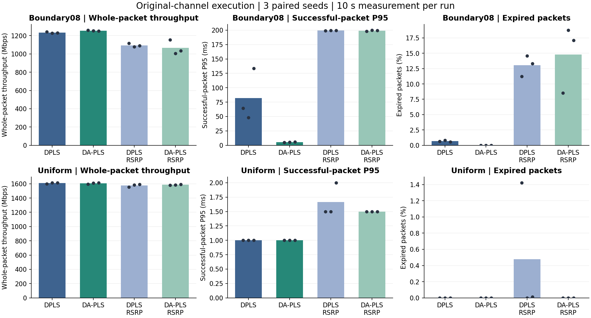
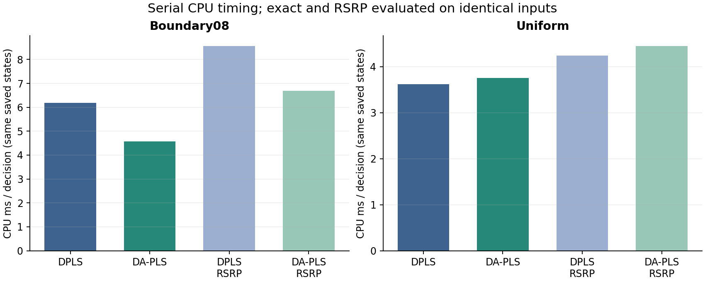

2026-11-09 · Boundary08 / Uniform · seeds 41–43
代码核对结论：现有 DPLS 与 DA-PLS 使用包含路径损耗、阴影衰落和逐次更新 Rayleigh 小尺度衰落的瞬时复数信道， 并按分源协方差 H Hᴴ 计算候选动作下的 MMSE-IRC SINR。它们并非只使用大尺度增益。
以下是逐 seed 指标的等权均值；吞吐指测量窗口到达、最终完整成功交付的包载荷。正的耗时变化表示更慢。
| scene | algorithm | throughput_change_pct | p95_original_ms | p95_rsrp_ms | expiry_original_pct | expiry_rsrp_pct | expiry_change_pp | serial_cpu_original_ms | serial_cpu_rsrp_ms | serial_cpu_change_pct |
|---|---|---|---|---|---|---|---|---|---|---|
| boundary | DPLS | -11.2311 | 82.0000 | 199.3333 | 0.6730 | 13.0326 | 12.3596 | 6.1789 | 8.5601 | 38.5360 |
| boundary | DA-PLS | -15.0879 | 5.5000 | 199.1667 | 0.0000 | 14.7911 | 14.7911 | 4.5783 | 6.6848 | 46.0112 |
| uniform | DPLS | -2.0300 | 1.0000 | 1.6667 | 0.0000 | 0.4783 | 0.4783 | 3.6200 | 4.2431 | 17.2138 |
| uniform | DA-PLS | -1.2682 | 1.0000 | 1.5000 | 0.0000 | 0.0000 | 0.0000 | 3.7524 | 4.4490 | 18.5662 |

仿真器没有标准邻区 RSRP 上报，本实验使用理想参考信号功率代理：取 TX 端口 0 的 |H|²，在 17 个 PRG 和 4 个接收分支上作线性平均； 以 100 ms 时间常数作因果 EMA，每 10 ms 上报，延迟 0.5 ms。调度评价器只接收每 UE、每邻区一个标量 β，以 Ĉ=4βI₄ 表示该源在全部 PRG 上的干扰。 β 使用仿真器已缩放的功率单位，不能当成 dBm；假设参考信号与数据端口功率可准确换算，未加入测量噪声、量化和波束不匹配。
服务链路瞬时 CSI、原生 PFQ 初选、MCS/OLLA、层数限制和业务权重保留。执行端始终使用原始 H，按原始 PHY 产生 SINR、BLER、CRC 与队列更新。 本实验隔离的是邻区反事实干扰评价精度，不是一个已移除全部瞬时信息或完成真实反馈接口的部署版本。
RSRP 是参考信号功率测量，不能恢复完整空间协方差；代理的具体接收分支平均方式也不宣称符合标准 RSRP 上报规则。 参考：3GPP TS 38.215 §5.1.1–5.1.2。
每条轨迹包含 2 s 共同 PFQ 预热、2 s 策略稳定、10 s 测量和 0.2 s 随访；所有测量期到达包均已有终态。 原始两算法复用同版本已核验的 12 条轨迹，新运行 12 条 RSRP 轨迹。保存哈希、配对验证和原生执行检查，不重写旧实验。 P95/P99 仅针对成功包；outcome P95 包含过期和 CRC 损坏结局，避免只看成功包而忽略丢包。 过期率与 CRC 等其它未交付比例分列。三 seed 仅用于探索性判断，不能据此证明普遍等效或不劣。
| scene | arm | payload_mbps | goodput_mbps | delay_mean_ms | delay_p95_ms | delay_p99_ms | outcome_p95_ms | expiry_pct | success_pct | other_nondelivery_pct | sample_sinr_bias_db | sample_sinr_mae_db |
|---|---|---|---|---|---|---|---|---|---|---|---|---|
| boundary | DPLS | 1232.8016 | 1292.4374 | 12.8949 | 82.0000 | 197.3333 | 169.3333 | 0.6730 | 89.1573 | 10.1697 | 0.0000 | 0.0000 |
| boundary | DA-PLS | 1254.7368 | 1312.3562 | 2.8074 | 5.5000 | 7.0000 | 5.5000 | 0.0000 | 90.7439 | 9.2561 | 0.0000 | 0.0000 |
| boundary | DPLS + RSRP | 1094.3440 | 1171.2203 | 67.3366 | 199.3333 | 200.0000 | 200.0000 | 13.0326 | 79.1431 | 7.8243 | -1.6178 | 1.6889 |
| boundary | DA-PLS + RSRP | 1065.4232 | 1161.2166 | 128.0366 | 199.1667 | 200.0000 | 200.0000 | 14.7911 | 77.0476 | 8.1612 | -2.3499 | 2.3689 |
| uniform | DPLS | 1609.5808 | 1625.1838 | 0.6089 | 1.0000 | 1.8333 | 1.1667 | 0.0000 | 93.1878 | 6.8122 | 0.0000 | 0.0000 |
| uniform | DA-PLS | 1607.0272 | 1622.0567 | 0.6053 | 1.0000 | 1.5000 | 1.0000 | 0.0000 | 93.0399 | 6.9601 | 0.0000 | 0.0000 |
| uniform | DPLS + RSRP | 1576.9064 | 1604.8258 | 1.9739 | 1.6667 | 83.6850 | 1.8333 | 0.4783 | 91.2958 | 8.2259 | -1.0667 | 1.3231 |
| uniform | DA-PLS + RSRP | 1586.6464 | 1612.1676 | 0.6890 | 1.5000 | 2.1667 | 1.5000 | 0.0000 | 91.8599 | 8.1401 | -1.0138 | 1.2279 |
固定同一已选动作，分别只去掉干扰空间方向、再去掉频域差异、以及使用实际延迟滤波的 RSRP 代理。前两项使用理想原始信道信息，只是离线诊断，并非另外两种闭环实验。误差相对原始 MMSE-IRC；不同列的误差不能相减解释为可加的因果贡献。
| scene | arm | spatial_only_sinr_bias_db | spatial_only_sinr_mae_db | wideband_sinr_bias_db | wideband_sinr_mae_db | reported_rsrp_sinr_bias_db | reported_rsrp_sinr_mae_db |
|---|---|---|---|---|---|---|---|
| boundary | rsrp_deficit | -1.3336 | 1.3522 | -1.5628 | 1.6279 | -1.5769 | 1.6429 |
| boundary | rsrp_mlwdf_pf | -2.0501 | 2.0565 | -2.3269 | 2.3496 | -2.3574 | 2.3773 |
| uniform | rsrp_deficit | -0.9936 | 1.1153 | -1.0728 | 1.3021 | -1.0574 | 1.3157 |
| uniform | rsrp_mlwdf_pf | -0.9832 | 1.0683 | -1.0428 | 1.2359 | -1.0181 | 1.2302 |
RSRP 版本减对应原始版本；nominal 95% 配对 t 区间，n=3，未作多重比较修正。 吞吐单位 Mbps，时延单位 ms，过期率差值单位百分点。区间跨零不表示已经证明两者等价。
| scene | arm | control | metric | n | mean_delta | ci_low | ci_high |
|---|---|---|---|---|---|---|---|
| boundary | rsrp_deficit | deficit | payload_mbps | 3 | -138.4576 | -170.0587 | -106.8565 |
| boundary | rsrp_deficit | deficit | delay_p95_ms | 3 | 117.3333 | 4.8981 | 229.7686 |
| boundary | rsrp_deficit | deficit | expiry_pct | 3 | 12.3596 | 8.3187 | 16.4005 |
| boundary | rsrp_mlwdf_pf | mlwdf_pf | payload_mbps | 3 | -189.3136 | -375.3564 | -3.2708 |
| boundary | rsrp_mlwdf_pf | mlwdf_pf | delay_p95_ms | 3 | 193.6667 | 191.7694 | 195.5640 |
| boundary | rsrp_mlwdf_pf | mlwdf_pf | expiry_pct | 3 | 14.7911 | 1.1818 | 28.4005 |
| uniform | rsrp_deficit | deficit | payload_mbps | 3 | -32.6744 | -63.2448 | -2.1040 |
| uniform | rsrp_deficit | deficit | delay_p95_ms | 3 | 0.6667 | -0.0504 | 1.3838 |
| uniform | rsrp_deficit | deficit | expiry_pct | 3 | 0.4783 | -1.5544 | 2.5110 |
| uniform | rsrp_mlwdf_pf | mlwdf_pf | payload_mbps | 3 | -20.3808 | -34.4277 | -6.3339 |
| uniform | rsrp_mlwdf_pf | mlwdf_pf | delay_p95_ms | 3 | 0.5000 | 0.5000 | 0.5000 |
| uniform | rsrp_mlwdf_pf | mlwdf_pf | expiry_pct | 3 | 0.0000 | 0.0000 | 0.0000 |

同一搜索器和同一矩阵内核用于两版本，未额外开发标量专用 MMSE 内核。每个保存状态都执行精确与近似两种评价， 交替顺序重复 5 次、固定一个 CPU；两条轨迹的状态等权纳入。计时包含状态重建、PFQ 解码、近似模型转换和物理搜索， 不含 GPU 原生 PFQ、桥接、HOL 扫描和测量传输。源状态的权重固定，因此这是干扰评价替换的受控耗时比较。
| scene | objective | mode | wall_ms | cpu_ms | candidate_evaluations | mmse_misses | ue_evaluations |
|---|---|---|---|---|---|---|---|
| boundary | deficit | exact | 6.1804 | 6.1789 | 1884.1111 | 911.9444 | 6022.6667 |
| boundary | deficit | rsrp | 8.5613 | 8.5601 | 4779.7222 | 1531.3333 | 15739.2222 |
| boundary | mlwdf_pf | exact | 4.5800 | 4.5783 | 875.7222 | 451.8333 | 2479.5556 |
| boundary | mlwdf_pf | rsrp | 6.6860 | 6.6848 | 2666.2778 | 1244.1667 | 8412.1111 |
| uniform | deficit | exact | 3.6214 | 3.6200 | 910.2222 | 591.8333 | 2941.0556 |
| uniform | deficit | rsrp | 4.2443 | 4.2431 | 1565.3333 | 817.5556 | 4943.9444 |
| uniform | mlwdf_pf | exact | 3.7538 | 3.7524 | 963.6111 | 595.4444 | 3098.0000 |
| uniform | mlwdf_pf | rsrp | 4.4503 | 4.4490 | 1612.8889 | 826.8889 | 5107.6667 |
各算法自身轨迹的保存状态耗时如下，用于补充说明闭环状态变化对计算量的影响：
| scene | source_arm | wall_ms | cpu_ms | candidate_evaluations | mmse_misses | ue_evaluations |
|---|---|---|---|---|---|---|
| boundary | deficit | 6.7833 | 6.7817 | 1900.0000 | 959.6667 | 6231.1111 |
| boundary | mlwdf_pf | 4.9793 | 4.9779 | 1154.2222 | 562.4444 | 3360.0000 |
| boundary | rsrp_deficit | 8.9330 | 8.9317 | 5941.6667 | 1616.3333 | 19521.0000 |
| boundary | rsrp_mlwdf_pf | 7.0236 | 7.0226 | 2952.6667 | 1342.5556 | 9217.1111 |
| uniform | deficit | 3.9844 | 3.9830 | 1336.0000 | 778.0000 | 4331.3333 |
| uniform | mlwdf_pf | 4.0705 | 4.0691 | 1343.0000 | 753.8889 | 4337.4444 |
| uniform | rsrp_deficit | 4.0067 | 4.0056 | 1101.7778 | 681.8889 | 3518.5556 |
| uniform | rsrp_mlwdf_pf | 4.3289 | 4.3276 | 1195.6667 | 703.8889 | 3758.6667 |
以下在线耗时含并发争用，仅作描述，不能直接相除作为加速比：
| scene | arm | wall_ms_mean | cpu_ms_mean | mmse_misses_mean | candidate_evaluations_mean |
|---|---|---|---|---|---|
| boundary | deficit | 17.0203 | 16.9838 | 962.4046 | 1801.5179 |
| boundary | mlwdf_pf | 15.9287 | 15.8699 | 569.0498 | 1116.4701 |
| boundary | rsrp_deficit | 26.4973 | 26.4958 | 1596.0252 | 5467.5060 |
| boundary | rsrp_mlwdf_pf | 23.3459 | 23.3358 | 1261.0847 | 2846.2791 |
| uniform | deficit | 12.6065 | 12.5851 | 786.4261 | 1471.4700 |
| uniform | mlwdf_pf | 13.7800 | 13.7560 | 767.8581 | 1395.9402 |
| uniform | rsrp_deficit | 15.8785 | 15.8780 | 725.0315 | 1304.8010 |
| uniform | rsrp_mlwdf_pf | 14.9707 | 14.9702 | 632.2360 | 1003.5945 |
单元测试覆盖报告延迟、滤波因果性、信息隔离、协方差归一化和近似搜索的独立全枚举对照。 八条短闭环试验先通过；正式状态再用独立 NumPy 物理模型核对调度预测和原始执行。 原始信道、预热动作、到达业务及拓扑配对通过；精确与近似版本的物理预测差异属于实验结果，不被误记为执行错误。